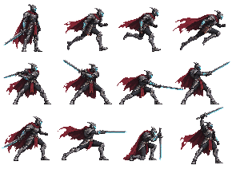

CYBER KINGDOM / CHARACTER STUDY 02
黑鋼騎士
重新建立輪廓、材質與出刀的重量。
逐格1 / 1
RUN / BALANCE AND FOOTFALLS
重心與腳步一起移動
依序為第 1、5、9、13、17、21 格。兩腳輪流承重，肩腰跟隨起伏；不再讓固定上身配上過度伸長的腿。

SILHOUETTE / MOTION KEYS
造型與關鍵動作
站姿、移動、原地斬、踏斬與拔劍的同一套角色設計。以下為降至遊戲像素密度的檢視。

查看完整造型原圖